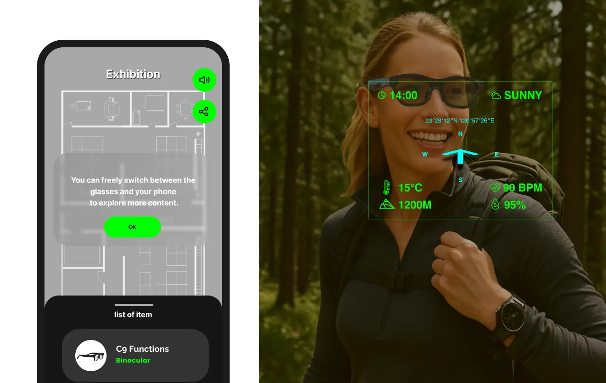

HJ1 AI Smart Glasses B2B Demo Design
Working with firmware engineers in a no-OS hardware environment, designed a 1.5-minute eye-tracking-centric B2B demo flow supporting CES 2026 and other major commercial presentations.
Multi-modal AR

Design Context
HJ1 is Jorjin's in-house AI smart glasses with an eye-tracking module. Before I joined, the demo approach was "glasses connected to phone" — showcasing the phone software and display resolution, not the glasses' own interaction capabilities.
After joining, I led the complete B2B demo experience design for the HJ1 standalone device. With no full OS at the time, UI assets and detailed interaction specs had to be delivered directly to firmware engineers for implementation — and we jointly tuned the eye tracking UX parameters (trigger timing, trigger zone, data smoothing, and outlier rejection).
Challenges
- No OS support: Designs had to rely entirely on firmware implementation with highly precise specs — no UI frameworks available.
- Uncertain eye tracking success rate: Detection depends on each user's facial geometry (IPD, nose bridge height, nose pad size) — calibration couldn't be guaranteed for every visitor.
- Demo time pressure: The original demo was ~5 minutes, mixing touchpad and eye tracking, making it hard for B2B clients to focus on the core advantage.
What I Did
- Designed the complete HJ1 demo experience, compressing runtime from 5 minutes to 1.5 minutes
- Planned auto-advance mechanisms to keep the flow moving even when eye tracking failed to trigger
- Delivered UI assets and interaction specs; jointly tuned eye tracking parameters with firmware engineers
- Adapted content for each venue: CES, Amazon, Sports Technology Center
- Designed the Sports Technology Center version's "glasses → large screen" dual-display extension
Design Process
Core design question: How do we ensure every B2B visitor completes a full eye-tracking interaction experience, given limited time and unstable detection success rates?
4 stages, 1.5 minutes — ensuring every visitor completes the full eye-tracking experience
Redesigned the original fragmented 5-minute flow (mixing touchpad and eye tracking) into a sequential experience with eye tracking as the sole interaction modality.
- ① Display confirmation — Verify the user can see the glasses display clearly; establish basic trust
- ② Eye tracking calibration — Complete calibration and establish the detection baseline
- ③ Trigger trial — Let the user feel what eye-dwell selection feels like; build interaction confidence
- ④ Use-case demo — Receive a meeting notification → eye-trigger → read the full message; demonstrate eye tracking value in a real scenario
Key design decision: Each stage auto-advances on completion. If eye tracking fails to trigger, the system plays through automatically — making "failure" invisible to the visitor, guaranteeing every user completes the full flow.
Jointly tuning 4 parameters with firmware engineers to find the most stable trigger experience
Without a ready-made OS to rely on, we jointly tested and tuned these parameters to find the most stable trigger experience across varying facial geometries:
- Trigger timing: How long a dwell counts as a "selection" — balancing accidental triggers against sluggish response
- Trigger zone: The size of the active detection area, affecting precision and error tolerance
- Data smoothing: Smoothing the gaze trajectory to filter out micro-jitter
- Outlier rejection: Discarding sudden deviation data to prevent false positives
Same interaction core, adapted to each venue — demonstrating the system's extensibility
International Consumer Electronics Show — standard demo flow showcasing eye-tracking interaction to global B2B clients
Receive a message notification → eye-trigger to read — letting enterprise clients feel the value of eye tracking in an office context
Eye-select a ball trajectory → result projected to the venue's large screen, extending the interaction to "glasses × physical space"
Results
Demo runtime reduced from 5 minutes to 1.5 minutes. Supported 6 international exhibitions and B2B demos within 6 months, accumulating 1,000+ customer experiences.
Restructured the experience sequence, removed touchpad/eye tracking mixing, and added auto-advance mechanisms — ensuring every visitor completes the full eye-tracking interaction.
Strong visitor feedback, leading to follow-up partnership discussions between Foxconn and Amazon. The demo design was continuously iterated over six months, spanning international exhibitions and enterprise B2B demos.
| Date | Event |
|---|---|
| 2025/9/5 | Amazon B2B Demo — Conference room scenario, eye-triggered message reading |
| 2025/10/16 | FUTEX Future Tech Expo — Sports tech pavilion, ball trajectory × large screen dual display |
| 2026/1/6–9 | CES 2026 — Las Vegas |
| 2026/1/31–2/2 | MILO |
| 2026/4/28–29 | XR Expo |
| 2026/5/3–8 | SID |
HJ1 is a lightweight monocular color smart glasses co-developed by Jorjin × Foxconn, positioned as a demo prototype for eye tracking and new hardware integration technologies, aimed at engaging commercial clients and driving mass production. After six months of continuous demo iteration (trigger zone refinement, calibration tutorial methods, etc.), the project has been succeeded by a next-generation integrated product — the HJ1 demo phase has officially concluded.
Reflection
The biggest difference between designing a demo experience and designing a regular product: every demo might be the visitor's only encounter with this technology — there's no buffer for errors. First impression is the final impression.
This was my first time designing a B2B hardware demo experience. The product design logic I was used to — "let users explore, iterate continuously" — was completely inapplicable in a demo context. I started asking a fundamentally different question: within limited time, how do you make the visitor clearly feel the core advantage of eye tracking, rather than spending their energy just figuring out how it works?
This taught me that the core of demo design isn't "show everything the product can do" — it's "leave one most important thing in the visitor's mind." When hardware has limitations and certain features can't be shown live, a controlled demo flow is itself a design tool — it can fill the gaps and ensure the demo lands successfully.
Key Takeaways
- The core question in demo design: "How do you make the visitor remember the one most important thing?" — a fundamentally different logic from regular product design.
- For B2B demos, "no failures" takes priority over "full feature coverage" — fault-tolerance design is the most critical decision.
- When hardware has limits or features aren't ready, a controlled demo flow can be a design tool in itself — bridging the hardware gap and delivering core product value.
- Six months of iteration taught me: small interaction adjustments (trigger timing, feedback cues) have far larger impact on demo success than expected.